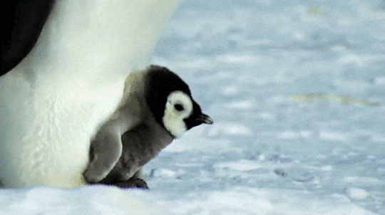

|
They are the largest animal ever recorded to Earth
Their Tongue Weigh as much as an Elephant
They live 80 to 90 years on average
|

|
Dolphin Have More Brain Capacity Than Human
Dolphin only sleep with half of their brain
A Group of Dolphin is called Pod
|

|
Their Body made up of 98% water
They have no Brain or Heart
Some Species are immortal
|

|
Octopus Arm Have a Mind of Their Own
They're Master of Camouflage
They Have Three Hearts
|
|

|
A Group of Penguins in the Water is called a Raft
Penguins typically build Nests out of Pebbles
No Penguin Live at The North Pole
|